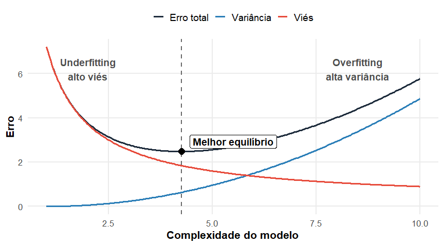

Parte II : Classificação
Introdução
Introdução
Regressão vs Classificação
👉 O problema de classificação é um problema similar ao de predição em regressão.
Regressão
Predizer valores numéricos
Exemplos:
- preço
- temperatura
- vendas
\[ Y \in \mathbb{R} \]
Classificação
Predizer categorias
Exemplos:
- spam/não spam
- fraude/não fraude
- doente/saudável
\[ Y \in \{1,\dots,K\} \]
Formulação do problema
Observamos:
\[ (X_1,Y_1),\dots,(X_n,Y_n) \]
onde:
- \(X_i\) → variáveis explicativas
- \(Y_i\) → classe
Objetivo: construir uma função \(g(\mathbf{x})\) capaz de prever a classe de novas observações, isto é,
\[ g(\mathbf{x}_{n+1}) \approx y_{n+1}, \ldots, g(\mathbf{x}_{n+m}) \approx y_{n+m} \]
Função de risco em classificação
Regressão
\[ R(g)=\mathbb{E}[(Y-g(\mathbf{x}))^2] \]
Classificação
\[ R(g)= \mathbb{E}[ \mathbb{I}(Y\neq g(\mathbf{x}))] = P(Y\neq g(\mathbf{x})) \]
ou seja, o risco de \(g\) é agora a probabilidade de erro em um nova observação \((\mathbf{x},Y)\).
Em outras palavras, uma função de perda mais adequada para o contexto de classificação é \(L(g(\mathbf{x}),Y) = \mathbb{I}(Y \neq g(\mathbf{x}))\), a chamada função de perda \(0-1\).
No contexto de regressão, vimos que a função que minimiza \(E[(Y − g(\mathbf{x}))^2]\) é dada pela função de regressão \(r(x) = E[Y|\mathbf{x} = x]\).
Regra ótima de Bayes
Teorema: Suponha que definimos o risco de uma função de predição \(g:\mathbb{R}^p \rightarrow \mathcal{C}\) via perda \(0-1\):
\[ R(g)=P(Y \neq g(\mathbf{x})), \]
em que \((\mathbf{x},Y)\) é uma nova observação que não foi usada para estimar \(g\). Então a função \(g\) que minimiza \(R(g)\) é dada por
\[ g(x)= \arg\max_{d\in\mathcal{C}} P(Y=d\mid \mathbf{x}) \]
Demonstração: Para simplificar a demonstração do teorema, vamos assumir que \(Y\) assume só dois valores, digamos, \(c_1\) e \(c_2\) (isto é, trata-se de um problema binário). Temos que
\[ R(g) = \mathbb{E}[\mathbb{I}(Y \neq g(\mathbf{x}))] = P(Y \neq g(\mathbf{x})) = \int_{\mathbb{R}^p} P(Y \neq g(\mathbf{x})\mid \mathbf{x})\,f(\mathbf{x})\,d\mathbf{x} \\ = \int_{\mathbb{R}^p} \left[ \mathbb{I}(g(\mathbf{x})=c_2)P(Y=c_1\mid \mathbf{x}) + \mathbb{I}(g(\mathbf{x})=c_1)P(Y=c_2\mid \mathbf{x}) \right] f(\mathbf{x})\,d\mathbf{x} \]
Assim, para cada \(\mathbf{x}\) fixo, o termo interno da integral é minimizado quando se escolhe
\[ g(\mathbf{x})=c_1 \quad \text{quando} \quad P(Y=c_1\mid \mathbf{x})\geq P(Y=c_2\mid \mathbf{x}) \]
e \(g(\mathbf{x})=c_2\), caso contrário.
\(\blacksquare\)
Conclusão: A regra ótima é escolher a classe com maior probabilidade condicional:
\[ g(x)= \arg\max_{d\in\mathcal{C}} P(Y=d\mid \mathbf{x}) \]
Essa é chamada de classificador de Bayes.
Para o caso binário, o classificador de Bayes pode ser reescrito como
\[ g(\mathbf{x})=c_1 \iff P(Y=c_1\mid \mathbf{x})\geq \frac{1}{2} \]
Estimação do Risco e Seleção de Modelos
Da mesma maneira que em regressão, pode-se estimar o risco de um método de classificação utilizando-se data splitting ou validação cruzada.

Estimação do Risco e Seleção de Modelos
Assim, \(\mathcal{D}=\mathcal{D}_{treino} \cup \mathcal{D}_{val} \cup \mathcal{D}_{teste}\). Utilizamos o conjunto de treinamento para estimar \(g\) e o conjunto de validação apenas para estimar \(R(g)\) via
\[ \widehat{R}_{val}(g) = \frac{1}{n_{val}} \sum_{(\mathbf{x}_i,Y_i)\in \mathcal{D}_{val}} I(Y_i\neq g(\mathbf{x}_i)). \]
isto é, avaliamos a proporção de erros no conjunto de validação.
Estimação do Risco e Seleção de Modelos
Garantia teórica da validação
Sejam \(G = \{g_1,\cdots, g_N\}\) uma classe de classificadores estimados com base em um conjunto de treinamento e,
\[ g^* = \arg\min_{g\in G}R(g) \]
o melhor modelo verdadeiro estimado.
Seja \(\hat g=\arg\min_{g\in G}\hat R(g)\), o modelo escolhido via validação.
Resultado: Com alta probabilidade, \(R(\hat g)\approx R(g^*)\).
Balanço entre Viés e Variância
Assim como em regressão, em classificação também se enfrenta o paradigma do balanço entre viés e variância.
🎯 Ideia central
Seja \(G=\{g_1,\dots,g_N\}\) uma classe de classificadores. Além disso, sejam o melhor risco (risco do oráculo) que pode ser obtido usando-se classificadores de \(G\) dado por
\[ R_{or} = \inf_{g\in G} R(g) \]
e \(R_*\) o risco do classificador de Bayes.
Para todo \(g \in G\),
\[ R(g)-R_* = T_1 + T_2 \]
onde:
\[ T_1 = R(g)-R_{or} \]
é o análogo da variância.
✔ sensível aos dados de treino
✔ cresce com modelos muito flexíveis
✔ alto risco de overfitting
Além disso,
\[ T_2 = R_{or}-R_* \]
é o análogo do viés ao quadrado.
✔ erro devido à simplicidade do modelo
✔ alto em modelos muito rígidos
✔ causa underfitting
Trade-off

Outras medidas de desempenho
Problema da acurácia
A taxa de erro
\[ R(g)=P(Y\neq g(\mathbf{x})) \]
nem sempre descreve adequadamente o desempenho de um classificador. Um modelo pode apresentar:
- baixa taxa de erro;
- alta acurácia;
e ainda assim possuir desempenho ruim na classe minoritária.
💡 Exemplo clássico
Considere que uma base de dados com 1000 pacientes, sendo
- 990 saudáveis
- 10 doentes
Um classificador trivial que classifica todos como saudáveis apresenta:
- acurácia ≈ 99%;
- sensibilidade = 0
⚠️ O modelo falha completamente em detectar pacientes doentes.
Matriz de confusão
\[ \begin{array}{c|cc} & \textbf{Valor verdadeiro} & \\ \textbf{Valor Predito} & Y=0 & Y=1 \\ \hline Y=0 & \text{VN (verdadeiro negativo)} & \text{FN (falso negativo)} \\ Y=1 & \text{FP (falso positivo)} & \text{VP (verdadeiro positivo)} \end{array} \]
Outras medidas de desempenho
Sensibilidade (Recall): Capacidade do modelo detectar observações positivas
\[
S=\frac{VP}{VP+FN}
\]
Especificidade: Capacidade do modelo detectar observações negativas
\[ E=\frac{VN}{VN+FP} \]
Outras medidas de desempenho
Precisão (Precision): Confiabilidade das predições positivas
\[
VPP=\frac{VP}{VP+FP}
\]
Valor preditivo negativo: Confiabilidade das predições negativas
\[ VPN=\frac{VN}{VN+FN} \]
Outras medidas de desempenho
Estatística \(F_1\)
\[
F_1=
\frac{2}{\frac{1}{S}+\frac{1}{VPP}}
\]
Média harmônica entre:
- sensibilidade;
- precisão.
Interpretação probabilística
As métricas derivadas da matriz de confusão estimam probabilidades populacionais. Por exemplo:
Sensibilidade
\[ S \approx P(\hat g(X)=1 \mid Y=1) \]
Especificidade
\[ E \approx P(\hat g(X)=0 \mid Y=0) \]
💡 Assim, é importante calcular os valores de VP, FN, VN e FP utilizando uma amostra de teste ou validação para evitar o sobre-ajuste.